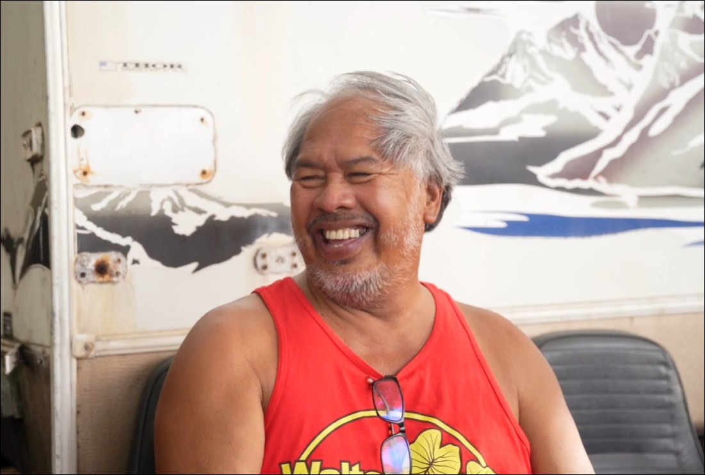
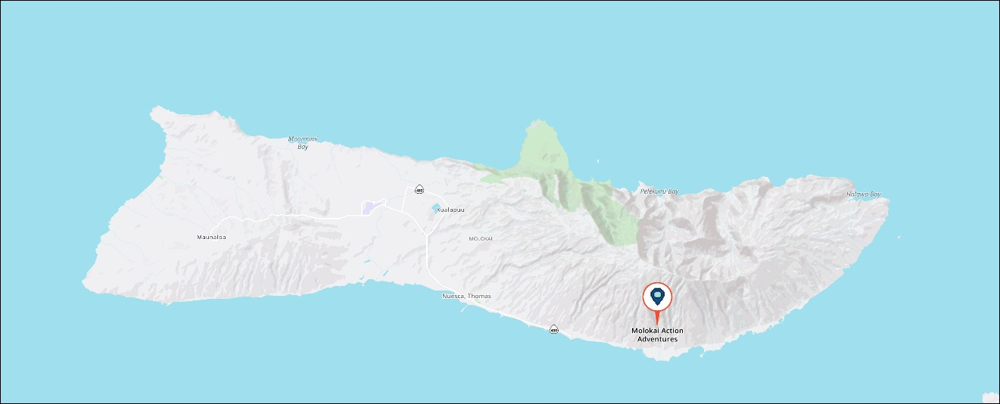

Kaunakakai, Molokai · Hawaii
Guided boat tours along the world's tallest sea cliffs with Captain Walter Naki — born and raised on these waters.

Walter Naki grew up on the Pali Coast of Molokai and has spent a lifetime navigating the waters surrounding his island home. Known to locals simply as "Uncle Walter," he is a man of the sea whose deep knowledge of Molokai's coastline, marine life, and Hawaiian heritage makes every trip an authentic, unforgettable experience.
From his boat in Kaunakakai, Walter takes small groups along the dramatic North Shore — home to sea cliffs that tower over 3,000 feet, hidden valleys accessible only by water, and some of Hawaii's most pristine waters.
Get in TouchWhether you come for the cliffs, the whales, or the hidden trails, every experience is personal and guided by decades of local knowledge.
Cruise along Molokai's legendary North Shore sea cliffs — the tallest in the world. Witness waterfalls, sea caves, and valleys inaccessible by land.
During humpback season (December through April), join Walter for close encounters with whales in the calm channels between Molokai and Lanai.
Dive into crystal-clear waters along Molokai's reef. Spot tropical fish, sea turtles, and the occasional Hawaiian monk seal in uncrowded conditions.
Paddle along the coastline with Walter as your guide. Explore sea caves, sheltered bays, and shoreline formations at your own pace.
Trek into hidden valleys and coastal trails that most visitors never see. Walter knows the paths, the plants, and the stories behind every landmark.
Planning something special? Walter offers private charters for fishing, photography, film crews, and small groups looking for a tailored adventure.
Molokai's North Shore is one of the most dramatic landscapes on earth.
Photos from the water, the valleys, and the shores of one of Hawaii's most untouched islands.
Guests from around the world describe their time with Uncle Walter as the highlight of their Hawaii trip.
"Walter Naki is somewhat of a legend. He grew up on the Pali Coast and clearly navigated the sea around this area for decades. An unforgettable experience."
"If you want to take the best tour on the island give Uncle Walter a call. The Pali Coast features the world's tallest sea cliffs and Walter knows every inch of them."
"Walter Naki took us on his Boston Whaler from Halawa Bay around the north shore of Molokai. The cliffs, waterfalls, and wildlife were beyond anything we imagined."
Call Walter directly to check availability and plan your tour. Walk-ins welcome when space allows.
Kaunakakai, Molokai
Hawaii 96748
